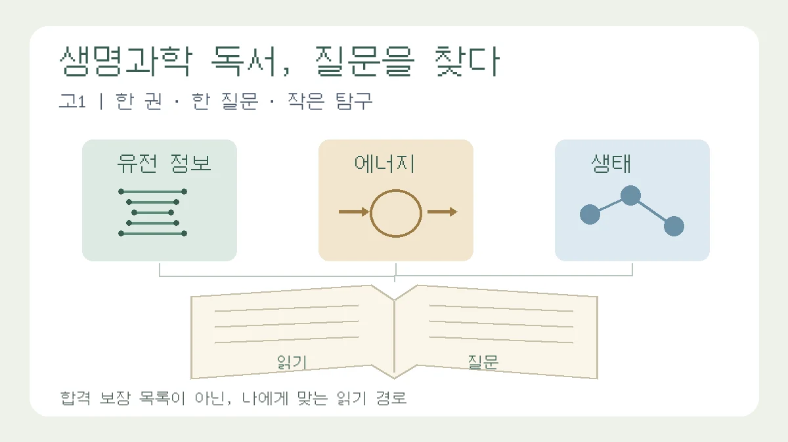

고1 생명과학 도서 3선, 생기부를 채우기보다 탐구 질문을 찾는 독서
유전 정보·에너지·생태 중 한 경로를 골라 읽고 비교하기
목차
- 질문부터 고르기
- 크리스퍼가 온다
- 생명이란 무엇인가
- 인수공통 모든 전염병의 열쇠
- 네 칸 활동 기록
- 수정 전후 작성 예시
- 첫 주 실행과 점검
- 서지와 확인 자료
핵심 요약
- 합격용 필독서 대신 지금 이해할 수 있는 질문으로 선택
- 세 권 완독보다 한 부분·한 질문·작은 산출물
- 책과 후속 연구·실제 활동과 계획을 구분

“생기부에 유리한 생명과학 책은 무엇인가요?”라는 질문은 “지금 배운 개념으로 어떤 질문을 끝까지 설명해 볼 수 있을까요?”로 바꾸어 보세요. 이 글은 고1 자연과학계열 관심 학생을 위한 독서·탐구 설계 안내입니다. 특정 책이 합격이나 평가 등급을 보장한다는 근거는 제시하지 않습니다. 세 권을 모두 읽거나 어려운 수식을 붙이는 것보다, 한 권의 일부를 읽고 이해가 달라진 지점을 남기는 활동을 제안합니다.
아래 서지는 확인 가능한 한국어판을 기준으로 합니다. 책 전체에 대한 서평이나 대학의 공식 추천 목록이 아니라, 서지·목차·소개와 별도의 과학 자료를 대조해 구성한 편집팀의 읽기 경로 제안입니다. 교과 연결은 개념 수준의 안내이며, 실제 단원명과 선택과목 개설 여부는 학교 교과서와 교육과정 편성표에서 확인하세요.
책부터 고르지 말고 질문부터 고르기
- DNA와 유전 정보가 궁금하다면: 《크리스퍼가 온다》에서 표적 인식과 유전자 편집의 한계로 이어 갑니다.
- 세포가 에너지를 쓰는 이유가 궁금하다면: 슈뢰딩거의 《생명이란 무엇인가》 부분을 골라 읽습니다. 세 경로 중 개념 난도가 높은 선택지이며, 열역학을 아직 배우지 않았다면 뒤로 미뤄도 됩니다.
- 생물과 환경의 관계가 궁금하다면: 《인수공통 모든 전염병의 열쇠》에서 한 감염병 사례만 골라 접촉·감염·확산을 구분합니다.
먼저 도서관에서 목차와 몇 쪽을 읽어 보세요. 낯선 용어를 세 개 정도 자기 말로 바꾸어도 문단의 뜻이 잡히지 않는다면 교과서로 돌아가거나 다른 경로를 선택합니다. 난도 표시는 이 글의 편집상 제안이지 학년별 공인 등급이 아닙니다.
유전 정보 경로: 《크리스퍼가 온다》
서지: 제니퍼 다우드나·새뮤얼 스턴버그 지음, 김보은 옮김, 프시케의숲, 2018. 부제는 ‘진화를 지배하는 놀라운 힘, 크리스퍼 유전자가위’이며 원서는 A Crack in Creation입니다. 연구 과정과 기술의 활용·윤리 문제를 함께 다룹니다.[1]
읽을 범위: 목차에서 크리스퍼의 작동 원리와 인간에게 적용할 때의 논의를 찾아 각각 한 부분을 읽습니다. 시작 전에 DNA·RNA·단백질의 관계를 교과서에서 정리하면 좋습니다. 책의 설명과 이후 연구 결과는 출판 시점이 다르므로, 최근 기술을 모두 책에 나온 내용처럼 적지 않습니다.
좁은 질문: “표적 서열과 비슷하다는 것은 무엇이며, 염기 교정은 기존 절단 방식의 모든 한계를 없앨까?” Cas9을 이용한 절단과 염기 교정은 같은 방식이 아닙니다. 2016년 연구는 DNA 이중가닥 절단 없이 특정 염기를 바꾸는 접근을 제시했습니다.[4] 그러나 특정 염기 교정기에서 의도하지 않은 RNA 편집도 관찰되어, ‘염기 교정은 오프타깃을 완전히 해결했다’고 결론 내릴 수 없습니다. 기술·효소·실험 조건별로 안전성을 따로 살펴야 합니다.[5]
고1이 만들 산출물: ‘표적 인식 → 변화 유도 → 결과 확인’ 개념도와, 절단 방식·염기 교정의 목표·한계를 비교한 한 쪽 자료를 만듭니다. 심화하고 싶다면 아래 가상 문자열을 비교해 보세요. 실제 생물 서열이 아닌 교육용 예시입니다.
- 기준:
ACGTACGT - 후보 A:
ACGTTCGT— 다섯째 위치가 다릅니다. - 후보 B:
ACGTACGA— 여덟째 위치가 다릅니다.
두 후보는 모두 한 글자가 다르지만, 이 사실만으로 실제 절단 위험이 같다고 판단할 수 없습니다. 이 모형은 문자열 비교 연습일 뿐이며 PAM, 위치별 불일치의 영향, 염색질 상태 등을 반영하지 않습니다. 오프타깃 예측 프로그램이나 실제 유전자 편집 실험으로 부르지 마세요. 실험 대신 자료 비교만으로도 질문을 다룰 수 있습니다.
에너지 경로: 《생명이란 무엇인가》를 골라 읽기
서지: 여기서는 에르빈 슈뢰딩거 지음, 전대호 옮김, 궁리, 2007년판 《생명이란 무엇인가 · 정신과 물질》을 기준으로 합니다. 두 저작이 묶인 판본이므로 표제와 목차를 확인하고, 생명과 질서를 다루는 부분부터 선택하세요. 다른 저자의 동명 도서와 혼동하지 않도록 저자·역자·출판사를 함께 적습니다.[2]
좁은 질문: “세포가 질서를 유지하는 것은 열역학 제2법칙을 거스르는 일일까?” 생물은 물질과 에너지를 주변과 교환하는 열린계입니다. 생명체 내부의 상태만 보고 판단하지 않고 주변을 포함한 전체 과정에서 엔트로피 증가를 생각해야 합니다.[6] ‘음의 엔트로피를 먹는다’는 표현을 물질 이름처럼 외우거나, 엔트로피를 ATP와 같은 에너지 단위로 취급하지 않습니다.
고1이 만들 산출물: 세포를 경계로 영양분·산소의 유입, 노폐물·열의 유출을 표시한 흐름도를 그립니다. 그 옆에 ‘모형에서 포함한 것 / 생략한 것’을 나누어 씁니다. 세포막 능동수송은 에너지를 이용하는 사례로 연결하되, 펌프 그림 하나로 생명체의 엔트로피를 측정·증명했다고 적지 않습니다.
막혔을 때의 수정: “생명은 무질서를 거스른다”는 초안을 “생명체는 주변과 교환하면서 내부 상태를 유지하므로 주변까지 고려해야 한다”로 고쳐 보세요. 여기까지 설명할 수 있다면 수식 유도는 필수가 아닙니다. 이 책을 현대 분자생물학의 최신 교과서처럼 사용하지 말고, 역사적 질문을 현대 교재와 비교하는 독서로 접근하세요.
생태 경로: 《인수공통 모든 전염병의 열쇠》
서지: 데이비드 쾀멘 지음, 강병철 옮김, 꿈꿀자유. 여기서 확인한 판본은 2022년 ‘1만 부 기념 리커버 에디션’입니다. 원서는 Spillover이며, 판본이 달라지면 쪽수도 달라질 수 있으므로 실제 읽은 판본을 기록하세요.[3]
읽을 범위: 긴 책을 모두 읽는 것을 출발 조건으로 삼지 말고, 목차에서 관심 있는 감염병 사례 하나를 선택합니다. ‘어느 동물·어떤 접촉·어떤 자료로 확인했는가’를 메모하며 읽어 보세요.
좁은 질문: “야생동물과의 접촉 기회 증가와 병원체의 유전적 변화는 어떻게 다른 설명일까?” 서식지 변화로 사람·가축·야생동물의 접촉이 늘어나는 경로는 감염 기회와 관련됩니다.[7] 그렇다고 접촉 증가만으로 ‘바이러스의 수용체 결합 변이 속도가 빨라졌다’는 결론이 나오지는 않습니다. 접촉, 숙주 감염, 사람 사이 전파를 구분하고 각각 어떤 근거가 필요한지 적으세요.
고1이 만들 산출물: 책의 한 사례와 CDC의 인수공통감염 예방 해설을 비교해 ‘주장 / 확인한 근거 / 아직 확인하지 못한 연결’ 세 칸짜리 근거표를 만듭니다.[7] 문헌 비교만 하는 기본 경로라면 수리 모델은 필요하지 않습니다. SIR 모델을 추가하고 싶다면 사람 사이 전파를 단순화한 모형과 최초 동물→사람 전파가 서로 다른 문제임을 먼저 구분하세요. 가상 변수를 넣은 그래프는 예측 결과가 아니라 가정의 영향을 살펴보는 연습으로 표시합니다.
줄거리에서 탐구로: 네 칸 독서 활동 기록
아래는 대학의 공식 평가 공식이나 교사가 그대로 옮길 세특 문장이 아닙니다. 학생이 읽은 내용과 실제 활동을 정리하기 위한 작업 틀입니다. 세특 작성 주체는 교사이며, 기록 여부와 내용은 수업·학교의 안내에 따릅니다.
- 수업 질문: 배운 개념과 아직 설명하지 못하는 질문을 한 문장씩 적습니다. 예: “표적을 알아보는 원리를 배웠지만, 비슷한 서열을 어떻게 구별하는지 궁금하다.”
- 읽은 근거: 실제 읽은 판본·쪽수와 핵심 설명을 자기 말로 적습니다. 책과 후속 논문의 주장은 출처를 나누어 표시합니다.
- 내가 한 비교·수정: 개념도, 근거표, 가상 문자열 비교 중 실제 만든 결과를 붙입니다. 만들지 않은 산출물이나 측정하지 않은 수치를 쓰지 않습니다.
- 남은 질문: 지금 자료로 알 수 없는 조건을 적고 다음 행동을 정합니다. “다음 학년에 심화하겠다”보다 “교과서의 표적 인식 설명과 논문의 비교 항목을 대조하겠다”처럼 구체화합니다.
작성 예시: ‘기술이 해결했다’에서 ‘비교할 조건이 남았다’로
수정 전 교육용 문장: “책을 읽고 유전자 가위의 오차율을 분석했으며 염기 교정이 오프타깃을 해결함을 증명했다.”
왜 고칠까? 실제 실험·분석 자료가 없다면 오차율을 분석하거나 효과를 증명한 것이 아닙니다. 또한 염기 교정에도 별도의 비표적 효과가 보고되어 있습니다.[5]
수정 후 교육용 기록 예시: “《크리스퍼가 온다》에서 표적 인식에 관한 부분을 읽고 작동 과정을 개념도로 정리했다. 추가 자료에서 DNA 이중가닥 절단을 피하는 염기 교정과 일부 교정기의 RNA 비표적 편집을 비교했다. 편집 방식이 다르면 확인할 위험도 달라진다는 질문이 생겼다. 직접 편집하거나 오차율을 측정하지는 않았다.”
이 예시는 실제 학생 활동이 아닙니다. 똑같이 옮겨 쓰지 말고, 본인이 읽고 만든 자료가 있을 때 그 범위로 다시 쓰세요. 발표·실험·논문 분석을 하지 않았다면 해당 표현을 빼고 독서 중 바뀐 이해만 남겨도 됩니다.
첫 주에 할 일과 제출 전 점검
- 한 경로를 고르고 목차에서 읽을 부분을 표시합니다. 세 권 구매나 완독을 전제로 삼지 않습니다.
- 핵심 용어 세 개와 질문 하나를 정리한 뒤, 개념도·비교표 중 작은 산출물 하나를 만듭니다.
- 교과서나 아래 추가 자료 한 곳과 대조하고, 틀린 문장 하나를 수정 전·후로 남깁니다.
- 실제 읽은 판본·쪽수·확인 날짜, 수행한 일과 계획한 일을 구분했는지 확인합니다.
- 고급 용어를 설명하지 못하면 삭제하거나 쉬운 질문으로 좁힙니다. 학교 과제에 맞는 분량과 제출 형식은 담당 교사에게 확인합니다.
질문을 처음 정한다면 탐구보고서 첫 작성 가이드, 교과 개념에서 확장하는 구조가 필요하면 교과서에서 심화 탐구로 이어 쓰는 법, 이후 생명과학 보고서 설계는 고2 생명과학 탐구보고서 가이드와 이어 읽으세요. 이 글은 그중 ‘읽을 책과 첫 질문을 고르는 단계’를 담당합니다.
서지와 과학 설명의 확인 자료
확인일: 2026년 10월 30일. 서점 페이지는 서지·목차 확인에만 사용했으며 입시 평가 근거로 사용하지 않았습니다. 과학 설명은 별도의 교재·연구 자료와 대조했습니다. 아래 논문은 심화 확인용이며 고1의 원문 완독을 요구하지 않습니다.
- [1] 《크리스퍼가 온다》 서지·목차
- [2] 《생명이란 무엇인가 · 정신과 물질》 서지·목차
- [3] 《인수공통 모든 전염병의 열쇠》 리커버판 서지·목차
- [4] Komor 외(2016), DNA 이중가닥 절단 없는 염기 교정
- [5] Grünewald 외(2019), 특정 DNA 염기 교정기의 RNA 비표적 편집
- [6] OpenStax Biology 2e, 열역학 법칙과 생물의 열린계
- [7] Vora 외(2023), 병원체의 종간 전파·초기 확산 위험을 줄이는 개입
관련 글
탐구보고서 처음 쓰는 법: 질문·자료·분석·결론을 연결하는 실전 예시NEW
가상 공지 네 개를 비교하며 관찰과 해석, 결론의 한계를 구분하고 보고서 한 편으로 묶습니다.
교과서에서 심화 탐구로 빌드업하는 서술법: 4단계 작성 프레임과 문장 예시NEW
교과서 개념에서 출발해 심화 이론까지 연결하는 탐구보고서 서술법을 4단계 프레임과 구체적인 문장 예시로 정리했습니다.
고2 생명과학에서 의생명 계열 탐구보고서 쓰는 법NEW
고2 생명과학 탐구는 단원 개념을 의생명 질문으로 좁히고, 실험·자료의 한계까지 정리해야 세특과 면접에서 설득력이 생깁니다.
이 글은 일반 교육 정보이며 특정 대학 합격·학생부 평가·면접 결과를 보장하지 않습니다. 학교와 대학의 공식 안내를 함께 확인해 주세요.